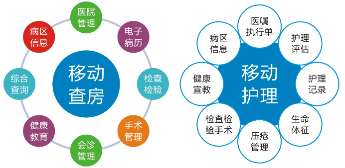

蓝创科技“移动医疗”核心理念，基于“物联网、云计算”和大数据融合等核心技术，旨在“提高病人安全、医疗质量和临床效率”，为大型医疗机构和全民健康提供“全人全程可及连贯的”智慧医疗服务体系。

移动查房系统
移动查房系统运行于平板电脑，是把信息化延伸到病人床头的工作，主要是临床医生在患者床旁用于患者病历信息查阅、医嘱信息查询、下达，检验检查报告、图像信息浏览等功能。
移动护理系统
移动护理系统运行于专用智能手持设备（PDA）上，是把信息化延伸到病人床头的工作，主要用于护士在患者床旁进行患者信息核对、病历信息查询、医嘱执行、入院评估、入院教育记录等功能。
功能列表
电脑端护理记录打印
移动端医嘱执行操作
产品优势
1. 患者医疗数据融合共享
2. 医疗质量管理贯穿整个系统操作流程
3. 全模板化护理文书录入方式
4. 采用异构数据源模型，对HIS系统稳定性无任何影响
5. 二维码自动核对完全保证病人的用药、手术安全
6. 强大、完善的用户角色组权限管理机制
7. 支持系统自动更新、升级
产品价值
1. 电子病历移动化：
将电子病历从桌面应用推向移动应用，适应了医院信息化建设要求，符合数字化医院建设需求。
2. 提高效率，“优质化服务”：
大大减少了医护工作中处理海量信息录入、手工抄写等工作环节，让医护人员有更多的时间对病人进行更好的优质医疗服务。
3. 减少医疗差错和事故：
通过二维码扫描技术，对药品、生化标本、设备、医护工作人员以及病人身份等信息的识别，有效杜绝人工判断差错的产生。
4. 医院管理精细化：
实时记录医院各个环节的医疗信息和收费过程，完善医院的考核体系，提高医院管理效率和管理力度。
5. 实现“以病人为中心”：
将医生站、护士站前移到病人床旁，提高了病人满意度，减少了医护人员的工作强度，医护人员有更多的时间和精力对病人进行治疗和护理，真正体现了“以病人为中心”的医院管理理念。
典型案例
北京解放军261医院
北京解放军261医院是一所三级甲等的传染病医院，是全军传染病医疗、教学、科研、保健和信息研究中心。全院使用军字一号系统，实现了无线网络的全覆盖，实施部署了移动查房、移动护理、移动输液子系统，实现了条码核对、医嘱执行、体征采集、护理记录、交接班报告、电子排版等功能，涵盖临床医疗护理涉及的所有工作，使医护人员可以随时随地查询、浏览、记录患者的各项信息。